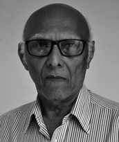

Nascido em 25 de setembro de 1938, em Alto Parnaíba (MA), José Cardeal dos Santos formou-se em Direito pela Universidade Federal de Goiás, em 1971. Mudou-se para Gurupi (TO), onde atuou como advogado, vereador e presidente da Câmara Municipal, além de presidir a subseção da OAB local. Foi um dos primeiros líderes da Casa do Estudante Norte Goiano (CENOG), entidade importante na mobilização estudantil da região. Com a criação do Estado do Tocantins, tornou-se Procurador do Estado, função que exerceu até sua aposentadoria em 2004.
Foi um dos primeiros líderes da Casa do Estudante Norte Goiano (CENOG), entidade importante na mobilização estudantil da região. Com a criação do Estado do Tocantins, tornou-se Procurador do Estado, função que exerceu até sua aposentadoria em 2004. Fundador e primeiro presidente do Sindicato dos Advogados do Tocantins e do Instituto Histórico e Geográfico do Tocantins, é membro da Academia Tocantinense de Letras, onde ocupa a Cadeira 08. É autor de obras sobre a história e cultura tocantinense, dedicando-se também à produção cultural e à pesquisa histórica. Escreveu, entre outros, “Assuntos Tocantinenses e Outros Temas”.
Fonte: Mário Ribeiro Martins, Retrato da Academia Tocantinense de Letras, 2005.
